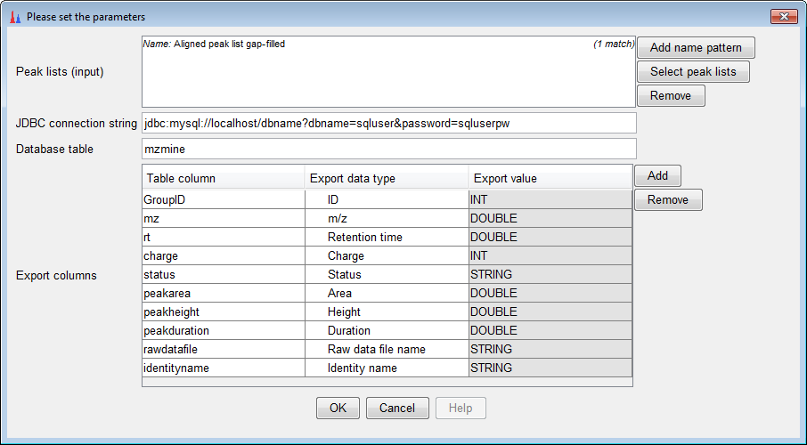

SQL export
Description
This module allows direct export of the peak lists into MySQL or PostgreSQL database servers. If you would
like to use another database then please add its JDBC driver (jar file) to the MZmine lib/ folder.
Method parameters
- Peak lists (input)
- Peak lists to be exported
- JDBC connection string
- Identification of the database according to the JDBC standard. For example:
jdbc:mysql://localhost/dbname?dbname=sqluser&password=sqluserpw
- Database table
- Name of the table for exported data
- Export columns
- The mapping between the database table columns (“Table column”) and MZmine data types (“Export data type”).
For some data types an additional value (“Export value”) must be specified, such as for the “Constant value” type.
